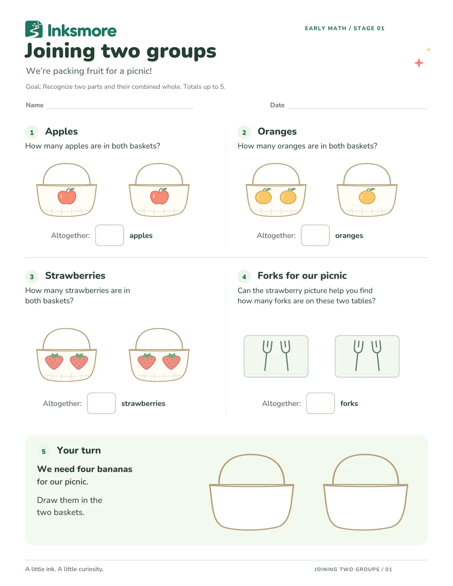
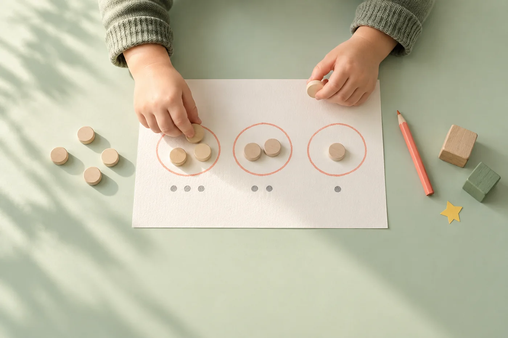
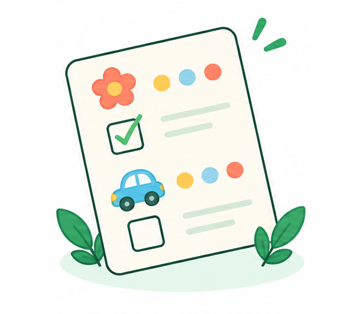
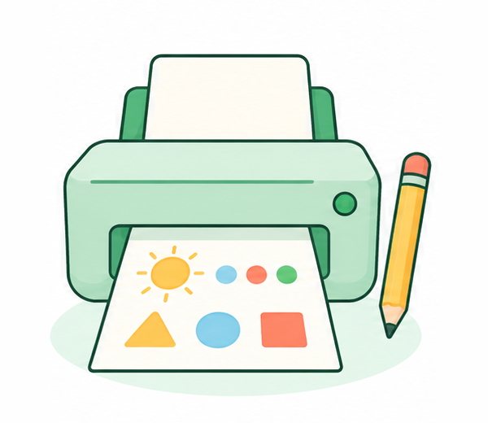
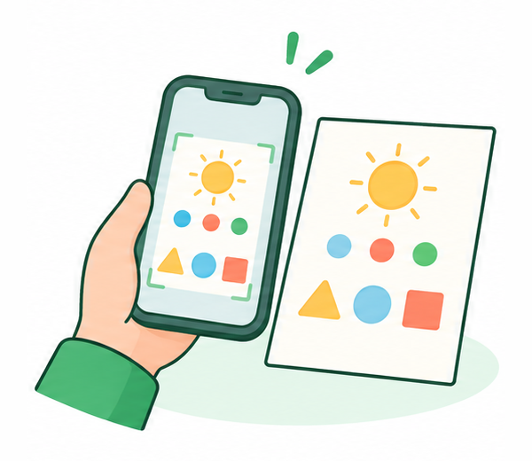
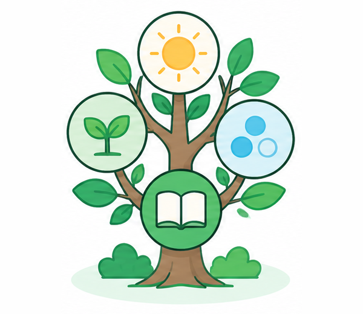

Andrew Ngai
ARTIFICIAL INTELLIGENCE
Pursuing a PhD in Artificial Intelligence at The Hong Kong Polytechnic University. Andrew brings 10+ years of AI experience and leads software development in an AI product team at Amazon.
ANGI · ADAPTIVE NEURAL GRAPH INTELLIGENCE
The days of one-size-fits-all learning should be behind us. With AI, every child deserves lessons tailored to their skills, needs, and pace.
Built on neural network modeling, ANGI is a knowledge graph that connects your child’s skills and tracks their learning progress. As practice and feedback enrich their profile, our AI creates and continually adapts their lessons. Each lesson strengthens foundations, builds on strengths, and introduces new challenges when they’re ready.
Personalized learning. On paper.
Starting with math for ages 2 to 6 · Free during early access
Hover or tap a skill to explore.


AI BEHIND THE SCENES. LEARNING ON PAPER.
Children learn with pencils, paper, and hands-on activities. They do not need a screen. Counting, drawing, writing, and working with paper materials give them opportunities to practice handwriting and hands-on skills alongside each lesson.
Behind the scenes, ANGI builds an understanding of your child’s learning path. Within a complete course, our AI generates each lesson around their profile and progress, then adapts what comes next using uploaded homework and your observations.
Lessons and homework stay on paper. Parents can print materials and share feedback by uploading completed work, answering simple yes-or-no questions, or doing both.
AI GUIDANCE. A LEARNING PATH OF THEIR OWN.

Answer a short questionnaire. ANGI builds their starting profile.

AI selects learning goals and generates a lesson based on their ANGI profile.

Upload homework, share your observations, or do both.

AI checks readiness as their profile develops. It unlocks connected skills when foundations are in place and revisits those that need support.
AI. NEUROSCIENCE. MATHEMATICS EDUCATION.
Our team brings together expertise in AI, neuroscience, and mathematics education to understand how children learn and create lessons that adapt to each child.
We are also parents, with six toddlers between us already using Inksmore. We built it for our own children and understand the everyday challenges of supporting their learning.
ARTIFICIAL INTELLIGENCE
Pursuing a PhD in Artificial Intelligence at The Hong Kong Polytechnic University. Andrew brings 10+ years of AI experience and leads software development in an AI product team at Amazon.
NEUROSCIENCE
A neuroscience researcher with a PhD from the University of British Columbia, studying attention, memory, and learning in ADHD. Xin’s research spans five peer-reviewed papers, including work published in Translational Psychiatry.
MATHEMATICS EDUCATION
Pursuing a PhD in Mathematics Education at Simon Fraser University, with a background in mathematics research and university teaching. Lyn brings expertise in how mathematical ideas are taught and understood.
DESIGN
A designer and parent with nine years of experience in graphic design and marketing, helping make Inksmore clear, welcoming, and easy to use.
YOUR QUESTIONS, ANSWERED.
We’re starting with math for children ages 2 to 6, supported by a parent or educator. Over time, we plan to expand the ANGI Learning Profile and this personalized approach to learners of all ages and across all skills.
No. Children learn through paper lessons, homework, and hands-on activities. Parents will also have a mobile web app to easily upload completed work and share feedback from their phones.
AI uses your child’s ANGI Learning Profile to understand their growing skills, strengths, and areas that need support. It generates learning content across courses, connecting relevant skills and adapting what comes next to their progress.
No. You can upload completed work, answer simple yes-or-no questions about how your child got on, or do both. This feedback helps ANGI update their profile and adapt future learning content.
No. Children can learn at their own pace, guided by their abilities and progress. ANGI adapts the next learning steps to what they are ready for, and your family chooses when to learn.
Yes. Access is currently free for early parents and participating partners.